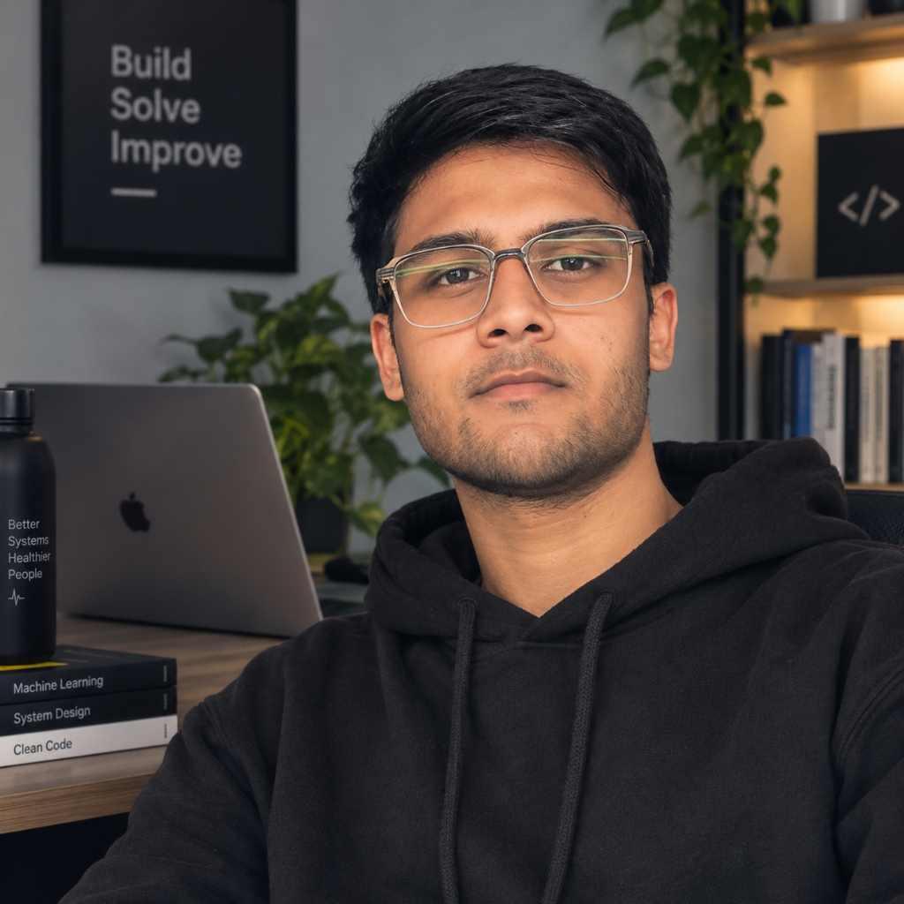

PRANJAL SINGH
Systems & AI Engineer | Deep Learning • Voice Intelligence
Electronics & Communication Engineering undergraduate at IIIT Ranchi. Building production speech recognition pipelines with Faster-Whisper at Stealthera Innovations and architecting continuous health telemetry at Arovia.
Bridging Signal Intuition & High-Throughput AI
Electronics and Communication Engineering undergrad at IIIT Ranchi, engineering low-latency systems and clinical deep learning.

About Me
I'm a pre-final year undergraduate in Electronics and Communication Engineering at IIIT Ranchi (CGPA: 8.27). My engineering instinct stems from low-level signal physics — understanding Fourier transforms, sampling limits, and bandwidth constraints — and translating them into robust, high-performance software.
Currently, I am an AI Engineer Intern at Stealthera Innovations, where I optimize Faster-Whisper streaming speech intelligence pipelines, audio DSP preprocessing, and multi-model inference benchmarks.
In my first year, I founded Arovia, developing 24/7 continuous wearable sensor telemetry for preventative cardiac arrhythmia detection and doctor-grade reports.
Work Experience & Startups
Real-world production engineering in streaming voice intelligence and wearable medical devices.
AI Engineer Intern
Stealthera Innovations Pvt. Ltd.
Driving production speech recognition and voice intelligence architectures for real-time applications.
- ▹ Speech Recognition Pipelines: Engineered low-latency voice pipelines with Faster-Whisper and modern ASR models, reducing transcription latency for streaming audio.
- ▹ Audio Signal Preprocessing: Implemented signal segmentation, silence removal, dynamic range normalization, and anomaly detection to handle acoustic noise.
- ▹ Model Inference Optimization: Quantized models and fine-tuned parameters for resource-constrained deployment environments.
- ▹ Comparative Benchmarking: Conducted multi-model benchmarks evaluating Word Error Rate (WER), latency, and memory footprint across varied acoustic settings.
Founder & Lead Architect
Arovia (Healthtech & Wearables)
Founded and architected a 24/7 continuous wearable biometric monitoring system in my first year of engineering.
- ▹ 24/7 Continuous Telemetry Engine: Designed an embedded telemetry pipeline streaming real-time vitals (heart rate variability, SpO2, and biometric stress spikes) with zero cloud latency.
- ▹ Real-Time Cardiac Anomaly Detection: Implemented algorithmic filtering to isolate cardiac irregularities and arrhythmia precursors amidst motion artifacts.
- ▹ Doctor-Grade Preventative Health Summaries: Synthesized high-volume wearable sensor data streams into actionable clinical reports for preventative diagnosis.
Production & Research Architectures
Deep systems engineered for zero-server data streaming, medical deep learning, cryptographic timelocks, and local-first AI.
HELIOS
Enterprise API Engineering Workbench & Local RAG Copilot.
Parses OpenAPI 2.0, 3.0, and 3.1 definitions into a canonical in-memory Abstract Syntax Tree (AST), generating multi-language SDKs and conducting offline compliance audits.
RhythmNet
Clinical Inter-Patient ECG Arrhythmia Intelligence.
Medical-grade deep learning architecture built on ANSI/AAMI EC57 standards for automated cardiac beat classification and continuous ambulatory ECG stream processing.
ShellMind
Local-First Natural Language AI Shell for macOS in Rust.
Translates plain English intent into verified POSIX zsh commands using compile-time type-state security without compromising developer control.
AirStrings
Gesture-Controlled Virtual Musical Instrument & VJ Visualizer.
Transforms any webcam into a touchless polyphonic musical instrument using MediaPipe 3D landmark tracking and Tone.js Web Audio synthesis.
P2P Drop
Zero-Server Memory-to-Memory File Streaming via WebRTC.
Bypasses intermediate cloud servers to stream multi-gigabyte payloads directly between browser memory heaps using WebRTC SCTP DataChannels.
Chronolock
Cryptographic Timelock Vault using Verifiable Delay Functions.
Guarantees that encrypted secrets cannot be cracked before a target wall-clock time, even by parallelized supercomputing clusters.
Hackathons & Engineering Arenas
Rigorous competitive problem solving under tight execution timelines and national arenas.
Smart India Hackathon 2025
Collaborated in the national-level innovation arena, engineering practical end-to-end hardware and AI solutions under Ministry criteria.
CodeChef Competitive Arena
Regularly competing in rated algorithmic contests; achieved a peak rating of 1553 through rigorous data structures and time-bounded problem solving.
Flipkart GRIDs 2.0
Competed in the national engineering challenge, architecting high-throughput algorithmic pipelines for complex logistics and system constraints.
Google Cloud Arcade
Completed hands-on labs and architectural challenges focusing on cloud compute, Kubernetes deployment, and scalable backend infrastructure.
Honors & Core Milestones
Multi-disciplinary excellence across competitive programming, telemetry engineering, and systems research.
Competitive Programming & DSA
- CodeChef Peak Rating 1553 in Division 2 rated algorithmic contests.
- 200+ DSA Problems Solved across Graph algorithms, Dynamic Programming, and complex Trees.
- Smart India Hackathon 2025 national finalist solving real-world technological challenges.
Signal Processing & Telemetry
- Founded Arovia in freshman year, designing 24/7 continuous wearable sensor telemetry engines.
- Clinical Signal Processing: Authored Butterworth filtering and Pan-Tompkins QRS morphology extractors for clinical ECG.
- Hardware Sensor Interfacing: Experience with bio-potential telemetry, analog-to-digital conversions, and noise cancellation.
Systems Architecture & Cryptography
- Zero-Server Distributed Streaming: Engineered memory-to-memory WebRTC DataChannels at line-rate.
- Rust Systems Security: Implemented compile-time type-state boundary machines in ShellMind.
- Verifiable Delay Functions: Implemented Pietrzak halving proofs for mathematical timelock encryption.
Technical Skill Matrix
Categorized competencies spanning low-level systems, speech intelligence, and distributed architecture.
Programming Languages
AI & Speech Recognition
Distributed Systems & Web
Signal Processing & Cryptography
Education & Foundation
Academic grounding in signals, communications, and computational systems.
Bachelor of Technology (B.Tech)
Electronics and Communication Engineering (ECE)
Let's Build Something High-Performance
Open to AI Engineering roles, systems development, research collaborations, and ambitious projects.